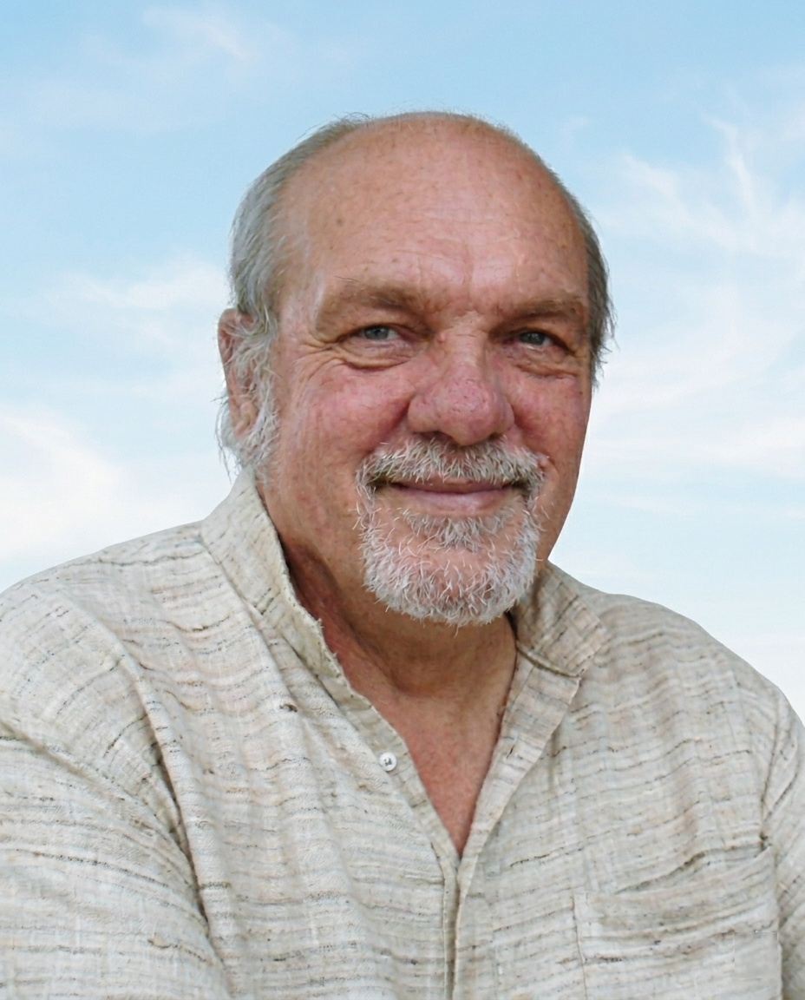
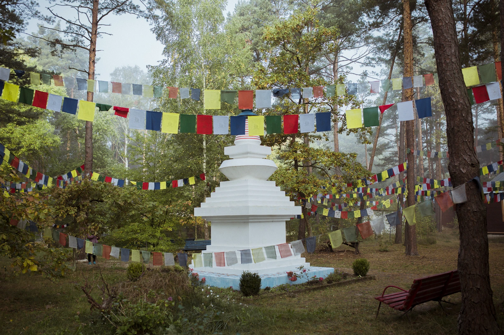
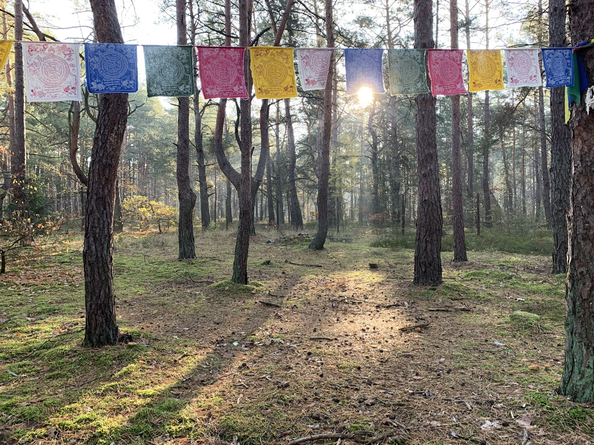
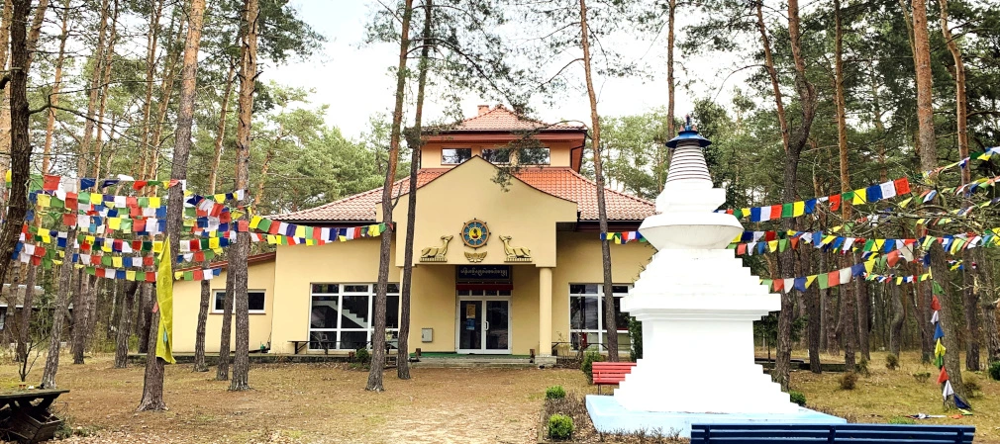

We are pleased to invite you to this year's BUSUKU – an intensive, 10-day radical Dzogchen retreat with Keith Dowman. The retreat will take place June 18–28, 2026, at a center Chiamma Ling in Poland (Wilga).
BUSUKU is a proposal both for people practicing the Dharma - including Dzogchen - and following the Buddhist path, as well as for those who do not formally identify with any spiritual tradition, but nevertheless have an experience or intuition of a non-dual reality that transcends time, space and the personal "I" - the nature of mind.
Participating in BUSUKU offers the opportunity to transcend intellectual understanding and ground oneself in a direct recognition of the nature of mind. It is, in essence, a twenty-four-hour "non-meditation"—a natural dwelling in the simplicity of the present moment, inseparable from everyday life.
"Dzogchen is all-encompassing, excluding nothing. Dzogchen is the heritage of being human and takes as many forms as our limitless imagination allows."
Retreat Leader
Keith Dowman is a translator and teacher of Dzogchen, a student of prominent Nyingma lamas, including Dudjom Rinpoche and Kangyur Rinpoche. He lived in Benares, India, and Kathmandu, Nepal, for almost 50 years.
Dowman conveys the essential teachings of Dzogchen in a simple, contemporary way, free from cultural influences. These are teachings about the nondual nature of reality—the nature of mind, which can be recognized here and now, in every moment.
He has translated numerous classical Tibetan texts into English, including the works of Longchenpa. His teachings are particularly valuable for those seeking to deepen their experience of Dzogchen.

"Keith Dowman, a translator who spent many years with many great masters and absorbed the realization of Dzogchen" - Namkhai Norbu
BUSUKU
The name BUSUKU refers to the nickname of the Indian mystic Shantideva, meaning "enlightened idler." This term indicates the essence of human genius, which manifests itself when left to its own devices, without discipline, effort, or ambition.
BUSUKU retreats create time and space to relax into the nature of the mind. The June retreat will last 10 days, during which trekcho and togyal will be practiced. With five two-hour sessions scheduled each day, the retreat will be demanding.
Silence and complete withdrawal from external life are also essential; however, there is no formally imposed discipline. For those who have already participated in Dzogchen retreats, BUSUKU can be a particularly valuable opportunity to deepen their previous experience.
LOCATION OF THE RETREAT
The Chiamma Ling Center is located abt. 50 km from Warsaw, in the heart of a pine forest and provides a conducive, intimate environment for practice. Accommodation is provided in cottages located on the center's grounds, with each participant having a separate room, as required for solitary practice.



More images from the retreat place: Cziamma Ling.
REGISTRATION
The estimated cost of stay (accommodation, meals and organizational costs) is:
• 600 EUR – accommodation + two meals a day (breakfast and dinner) - deposit payment of 150€.
Suggested donation for the teacher's teachings: 25 EUR per day per person.
Participation is possible only in the full, 10-day retreat. The retreat will take place provided a minimum of 15 people sign up.
To register your participation, please contact: radykalnydzogczen@gmail.com
By submitting your email application, you consent to the processing of your data for the purpose of organizing the retreat.